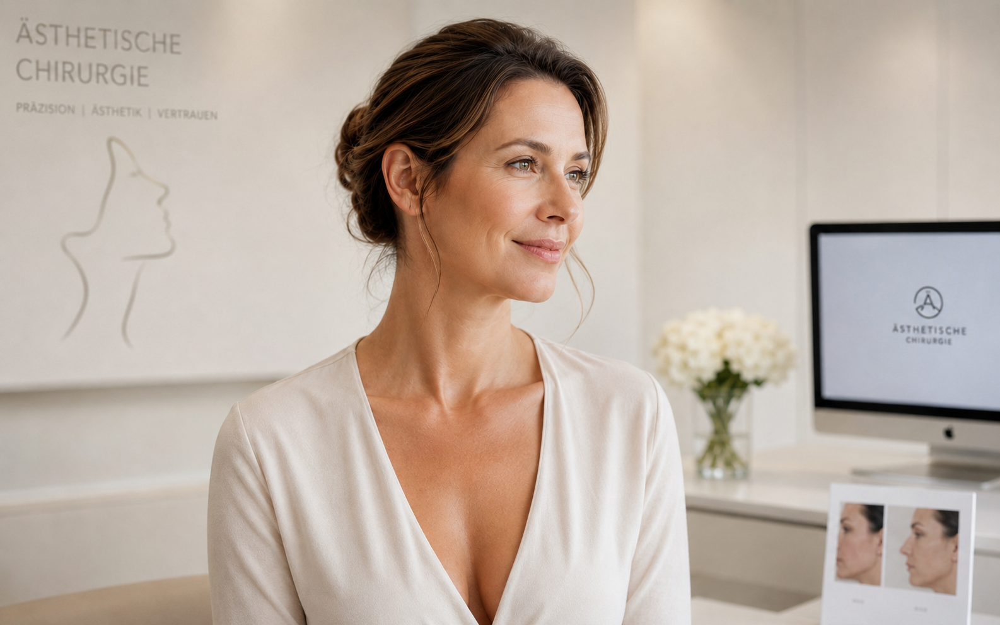

01 · Ästhetik
Plastische und Ästhetische Chirurgie
Operative und minimalinvasive Verfahren für Gesicht, Brust und Körper. Im Mittelpunkt stehen natürliche Proportionen, sorgfältige Planung und eine ruhige medizinische Beratung.
Weiterführende Informationen